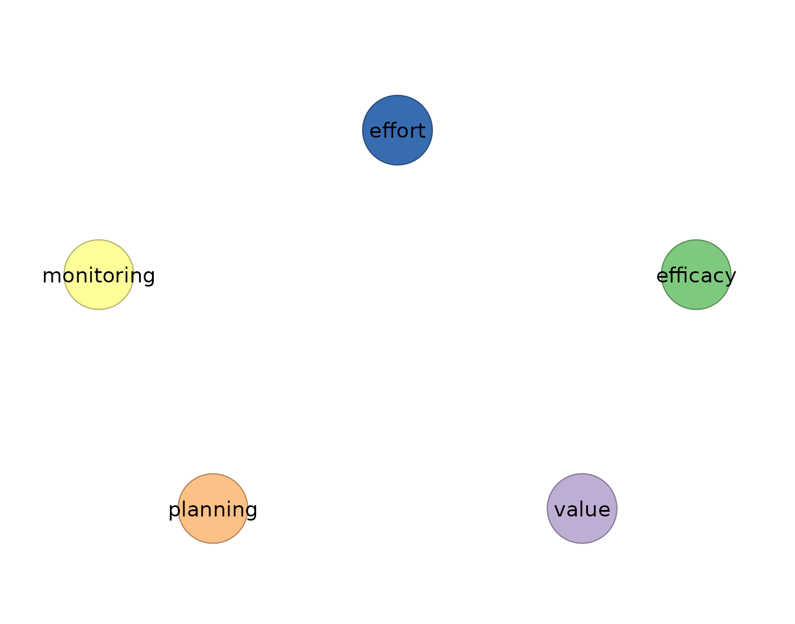

idiographic is designed as a clean-room implementation
of common idiographic network estimators. The package exposes a uniform
R interface and tidy accessors while keeping the estimands aligned with
the external methods it validates against: ordinary VAR, graphical VAR,
mlVAR, Bayesian/DSEM, uSEM/GIMME, rolling windows, model comparison,
stability, and forecasting. This vignette documents the design logic
rather than introducing a new estimator.
Design principles
A clean-room implementation should reproduce the statistical estimand
without copying an external package’s internals. For
idiographic, that means explicit lag construction,
standardized accessors, shared print and plot conventions, and tests
against reference behaviour where possible. The package separates
temporal, contemporaneous, and between-person layers because their
interpretations differ (Epskamp et al. 2018).
The accessor contract is deliberately small. summary()
reports network-level density and signed-edge counts.
edges() returns one row per edge. coefs()
includes full coefficient cells when available. nodes()
summarizes strength, out-strength, in-strength, and self-loops.
matrices() returns the estimator matrices. This common
surface makes estimator differences visible without erasing them.
Method coverage
Ordinary VAR is the unregularized single-person baseline (Bringmann et al. 2013). Graphical VAR adds LASSO and graphical-lasso regularization with EBIC model selection. mlVAR estimates average within-person temporal and contemporaneous layers plus a between-person network (Epskamp et al. 2018). Bayesian VAR and DSEM add posterior uncertainty and Mplus-oriented dynamic SEM links. uSEM and GIMME use SEM path vocabularies, with GIMME searching for group and individual paths.
Worked validation surface
The same srl input can be audited and passed to multiple
estimators through a common interface.
vars <- c("efficacy", "value", "planning", "monitoring", "effort")
audit <- preprocess(srl, vars = vars, id = "name", min_obs = 100)
audit
#> Idiographic Preprocessing
#> Variables: 5 (efficacy, value, planning, monitoring, effort)
#> Ordered rows: 5616
#> Retained pairs: 5548
#> Trend flags: 10
#> High AR flags: 0
#> Drift flags: 1
#> Unit-root risk: 0
#> Zero variance: 0
#> Tables: x$pairs | x$counts | x$diagnostics
#>
#> 10 of 180 subject-series show a trend or unit-root that can bias the temporal network. preprocess() only diagnosed this; to clean just the series that need it, re-run with:
#> preprocess(data = srl, vars = vars, id = "name", min_obs = 100, detrend = "auto")The audit reports 5548 retained lagged pairs and no unit-root or zero-variance flags. Grace is used below because none of her five series receives any audit flag; the selection is based on the input diagnostics, not on which fitted network looks best. This is the common preprocessing surface for the estimator vignettes.
var_fit <- fit_var(srl, vars = vars, id = "name", subject = "Grace",
scale = TRUE)
gvar_fit <- fit_graphical_var(srl, vars = vars, id = "name", subject = "Grace",
n_lambda = 8)
summary(var_fit)
#> network n_nodes n_edges density mean_abs_weight n_positive n_negative
#> 1 temporal 5 20 1 0.07457677 9 11
#> 2 contemporaneous 5 10 1 0.16039547 6 4
summary(gvar_fit)
#> network n_nodes n_edges density mean_abs_weight n_positive n_negative
#> 1 temporal 5 0 0.0 0.0000000 0 0
#> 2 contemporaneous 5 3 0.3 0.2067944 3 0The two summaries expose the design contrast. OLS reports full temporal and contemporaneous density with mean absolute weights 0.075 and 0.160. Graphical VAR reports zero temporal edges and three contemporaneous edges. The same accessor shape makes the regularization consequence explicit.
head(edges(var_fit), 8)
#> network from to weight
#> 1 temporal monitoring value -0.16044703
#> 2 temporal planning effort 0.15915019
#> 3 temporal value effort 0.13468003
#> 4 temporal value monitoring -0.12042423
#> 5 temporal planning value -0.10980077
#> 6 temporal effort planning 0.10801846
#> 7 temporal value efficacy -0.10161078
#> 8 temporal value planning 0.09013167
edges(gvar_fit)
#> network from to weight
#> 1 contemporaneous monitoring effort 0.2514403
#> 2 contemporaneous efficacy monitoring 0.2223059
#> 3 contemporaneous planning effort 0.1466372The ordinary VAR edge table contains small lagged effects such as
monitoring to later value (−0.160) and planning to later effort (0.159).
The graphical VAR retains only contemporaneous monitoring–effort,
efficacy–monitoring, and planning–effort edges. A temporal edge
from -> to means from at occasion
predicts to at occasion
;
a contemporaneous graphical VAR edge is an undirected partial
correlation.
Validation boundaries
The package can validate deterministic estimators against external results more directly than stochastic or external-backend estimators. Bayesian estimators require Monte Carlo tolerances. Mplus-backed functions require licensed software and file-based workflows. uSEM and GIMME depend on SEM convergence and search behaviour. Stability and forecast helpers are experimental diagnostics without a single canonical reference implementation.
Visualization
plot(var_fit)
The ordinary VAR plot shows the full two-layer network used as the transparent baseline.
plot(gvar_fit, layer = "contemporaneous")
The graphical VAR plot shows the sparse selected contemporaneous layer, making the clean-room regularization result visually inspectable.
Caveats
Uniform accessors do not imply identical estimands. A GIMME prevalence edge, an mlVAR fixed effect, a graphical VAR partial correlation, and a forecast residual answer different questions. Clean-room validation should therefore be read layer by layer and estimator by estimator, with the primary literature defining the target of reproduction.